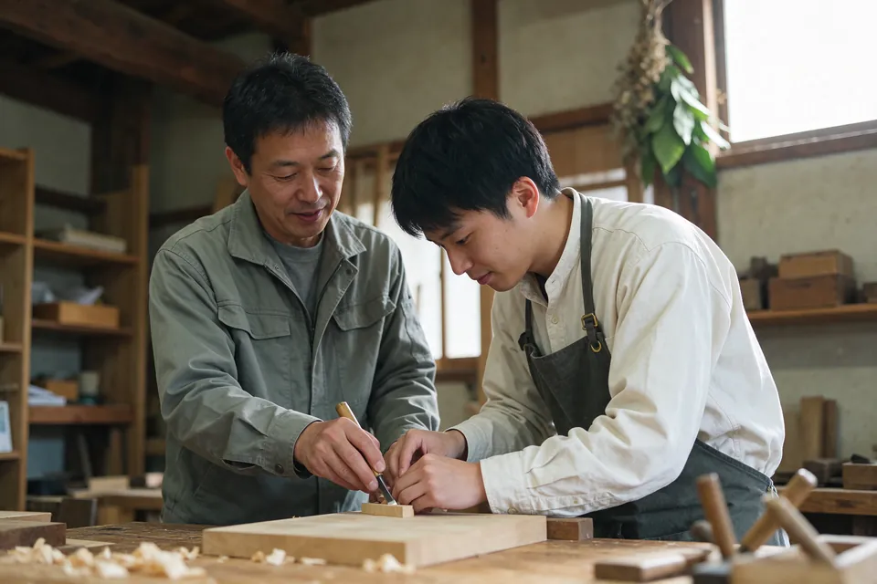
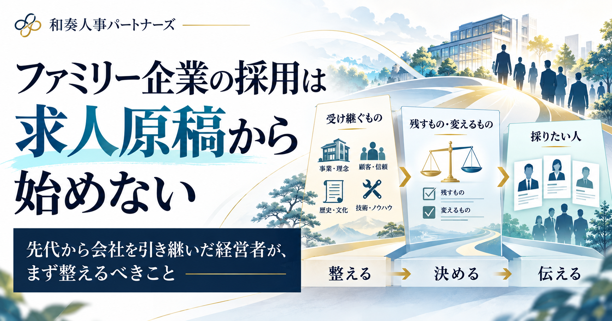

Mission存在意義
御社は、何のために存在している会社なのか。
創業の背景、先代から受け継いできた想い、お客様や地域に提供している価値、これから目指す会社の姿を整理します。
単にどんな仕事をしているかではなく、その仕事にどのような意味があるのかを明らかにします。
仕事の意味や会社の考え方に共感する人材との出会いにつなげます。
RECRUITMENT CONSULTING
中小企業・ファミリー企業の採用コンサルティング
求職者の心理を理解し、
御社で働く価値を見つけ、
求める人材の心に届ける。
和奏人事パートナーズは、求職者の視点から採用の考え方と進め方を変えていきます。
YOUR RECRUITMENT CHALLENGES
一つでも当てはまることがあれば、これまでとは少し違う視点から、御社の採用活動を見直してみませんか？
採用がうまくいかない理由は、求人媒体や募集条件だけにあるとは限りません。
RETHINK RECRUITMENT
応募が来ないと、私たちはつい、求人媒体を変えることや、広告費を増やすこと、給与や待遇を見直すことから考えがちです。
もちろん、それらが必要な場合もあります。
しかし、その前に考えていただきたいことがあります。
御社が採用したい人は、今の求人情報を見て、「この会社で働きたい」と思えるでしょうか？
求人情報には、仕事内容や給与、勤務時間、休日、福利厚生などが掲載されています。
では、求職者が本当に知りたいことは、それだけなのでしょうか。
企業が掲載する情報
求職者が知りたいこと
こうした疑問に対する答えが、求人情報の中に十分にあるでしょうか。
どれほど求人情報を多くの人に届けても、求職者がそこで働く価値を感じられなければ、応募にはつながりにくいものです。
必要なのは、求人広告を変えることだけではありません。
求職者の視点から、採用活動そのものを見直すことです。
OUR RECRUITMENT PHILOSOPHY
商品やサービスを販売するとき、企業はお客様のことを考えます。
どのような人に必要とされるのか。
その人は何を求めているのか。
競合他社ではなく、自社を選ぶ理由は何なのか。
では、採用活動ではどうでしょうか。
求職者が何を求め、何に不安を感じ、どのような理由で会社を選ぶのか。
それらを十分に考えたうえで、求人活動を行っているでしょうか。
採用とは、企業が人を選ぶことだけではありません。
人を選ぶためには、まず求職者から選ばれる必要があります。
会社が伝えたいことから、求職者が知りたいことへ。
会社が人を選ぶことから、求職者から選ばれることへ。
仕事の条件を伝えるだけでなく、そこで働く価値を伝えることへ。
和奏人事パートナーズは、採用を「働きたい人の集客」と捉えています。
商品やサービスの価値をお客様に届けるように、御社で働く価値を、求める人材の心に届ける。
それが、和奏式の採用マーケティングです。
UNDERSTANDING JOB SEEKERS
求人情報に出会ってから応募を決断するまで、求職者の心にはさまざまな変化が起こります。
興味を持つこともあれば、不安を感じることもあります。
自分に合っているかを考え、他の会社と比較し、応募するかどうかを判断します。
和奏では、こうした求職者の心の動きを8つの心理段階に整理しています。
仕事を探す。
「自分に合う仕事はないだろうか？」
求人の存在を知る。
「こんな会社が求人を出しているんだ」
求人に関心を持つ。
「ちょっと気になる仕事だな」
仕事内容や会社について理解する。
「なるほど、こういう仕事をする会社なのか」
そこで働く自分を想像する。
「自分がこの会社で働くとしたら、どんな毎日になるだろう？」
疑問や不安を確かめる。
「自分にもできるかな？ どんな人が働いているのだろう？」
他の求人や会社と比較する。
「自分には、どの会社が合っているだろう？」
応募する意思を固める。
「この会社に応募してみよう」
※この図は和奏独自の概念モデルです。心理の実測値や応募確率を示すものではなく、すべての求職者が必ず同じ順序をたどるとは限りません。
和奏では、この心理段階を「同化」と呼んでいます。
仕事内容を理解することと、その仕事をする自分を具体的に想像できることは、同じではありません。
職場の雰囲気、一緒に働く人、仕事を覚えていく過程、仕事のやりがい、将来の成長。
そうした情報から、求職者が自分の働く姿を具体的に想像できるようになることを重視しています。
仕事内容は分かった。
ここで働く自分を想像できる。
応募が来ないときには、求人が見つけられていないのか、興味を持たれていないのか、理解はされても自分が働く姿を想像できていないのか。
その原因を分けて考えることが大切です。
和奏式・求職者心理8段階モデルは、採用活動のどこを見直すべきかを考えるための枠組みです。
WASOU ORIGINAL METHOD
和奏独自の採用価値設計メソッド
MASP-
「うちの会社には、求人でアピールできるような魅力がない」
そうおっしゃる経営者もいらっしゃいます。
しかし、長く働いている社員は、なぜ御社で働き続けているのでしょうか。
仕事の面白さ。お客様からの感謝。技術を身につけられる環境。経営者との距離の近さ。仲間との関係。任される仕事の幅。
御社にとっては当たり前のことでも、ある求職者にとっては、会社を選ぶ大切な理由になるかもしれません。
大切なのは、自社の価値に気づくこと。そして、その価値を求職者の視点から捉え直すことです。
MASP-CM法は、自社の内側にある価値を掘り起こし、採りたい人物像を明確にし、その人に届く採用表現へと変換する、和奏独自の6ステップのメソッドです。
PHASE 01
Mission
自社の本質と価値を掘り起こす。
PHASE 02
Persona
採りたい人物像を明確にする。
自社の価値と求職者をつなぐPHASE 03
Concept
その人が関心を持つ切り口と、その人に届く言葉へ変換する。
御社は、何のために存在している会社なのか。
創業の背景、先代から受け継いできた想い、お客様や地域に提供している価値、これから目指す会社の姿を整理します。
単にどんな仕事をしているかではなく、その仕事にどのような意味があるのかを明らかにします。
仕事の意味や会社の考え方に共感する人材との出会いにつなげます。
御社には、どのような資産や資源があるのか。
長年培ってきた技術やノウハウ、お客様との関係、社員の経験、設備、教育環境、地域での信頼、会社独自の歴史。
決算書には表れにくいものも含め、御社が持っている価値の源泉を掘り起こします。
経営者や社員にとって当たり前になっていることにも目を向けます。
その資産や資源は、どのような強みにつながっているのか。
御社が持つ資産や資源を整理し、他社との違いや、御社で働くことによって得られる価値を明らかにします。
会社側が強みだと考えていることと、社員が魅力を感じていることが異なる場合もあります。
競合求人の調査や社員へのインタビューを通じて、御社ならではの強みを見つけていきます。
御社は、どのような人を迎えたいのか。
単に経験や資格などの条件を決めるだけではありません。
どのような考え方を持ち、何を大切にし、どのような仕事や環境に価値を感じる人なのか。
既存社員の活躍の仕方や、これから任せたい仕事なども踏まえながら、採りたい人物像を具体化します。
誰にでも好まれる求人ではなく、御社に合う人に届く求人を目指します。
御社の強みを、採りたい人が関心を持つ切り口へ。
自社に魅力があっても、それがすべての求職者にとって魅力になるとは限りません。
同じ仕事であっても、安定した環境を求める人と、技術を身につけたい人とでは、心を動かされる理由が異なります。
Mission、Asset、Strengthで見つけた自社の価値を、Personaで明確にした人物像に合わせて捉え直します。
そして、その人にとっての「御社で働きたい理由」を設計します。
採りたい人の心に、御社で働く価値を届ける。
設計した採用コンセプトを、求人原稿や採用ページなどに掲載する具体的な言葉へと変えていきます。
会社が伝えたいことを一方的に発信するのではなく、求職者が理解でき、共感でき、自分の働く姿を想像できる表現へ。
セールスライティングの知見を活用しながら、御社で働く価値を伝えます。
求人原稿を書くことから始めるのではなく、御社の存在意義を考えることから始めます。
表面的に魅力的な言葉を並べるのではなく、御社の中に実際にある価値を、求める人材に伝わる形へ変えていく。
それが、MASP-CM法です。
御社の採用について相談するFROM STRENGTH TO MESSAGE
例えば、社員数の少ない、ある中小企業を考えてみましょう。
一般的な求人原稿では、次のような表現が使われています。
一般的な求人表現

もちろん、これらも必要な情報です。
しかし、この言葉だけでは、他社との違いや、実際に働く姿を想像することは容易ではありません。
MASP-CM法による求人表現
経験豊富な先輩のもとで、仕事の流れを基礎から学ぶことができます。
できることが一つずつ増えていく。その成長を実感できる職場です。
※比較写真はAI生成による架空の職場です。左右に同じ写真・サイズ・掲載条件を使用し、求人表現の違いを示しています。
そこで、会社の実態を掘り起こし、採りたい人物像に合わせて、求人の切り口と言葉を設計します。
これらは、仕事を通じて技術を身につけたい人にとって、大きな魅力になる可能性があります。
採用コンセプト
仕事の一部分だけではなく、仕事の全体を理解し、一人前の技術者へ成長できる会社。
Strength
経験豊富な先輩から直接技術を学べる。
Persona
経験はないが、将来につながる技術を身につけたい人。
Concept
仕事の一部分だけではなく、仕事の全体を理解し、一人前の技術者へ成長できる会社。
Message
経験ゼロから、仕事を一つひとつ覚え、自分の技術に自信を持てるようになる。
単に求人原稿の表現を魅力的にするのではありません。
自社の価値を発見し、誰に伝えるかを考え、その人が働きたいと思える理由に変えていく。
MASP-CM法では、こうした採用価値の設計から取り組みます。
※上記はメソッドを説明するための仮想事例です。実際の求人原稿では、企業の事実や就業条件を確認したうえで表現します。
OUR RECRUITMENT SERVICES
和奏人事パートナーズでは、MASP-CM法と求職者心理8段階モデルを活用し、御社の採用活動を支援します。
すべての企業に同じ採用手法をご提案するのではなく、御社の採用課題や募集職種、地域、採用予算などに応じて、必要な取り組みを設計します。
SERVICE 01
これまでの採用活動、求人原稿、募集条件、応募状況、採用後の定着状況などを確認します。
何を改善すべきか、どこから着手することが適切かを整理します。
SERVICE 02
求職者が御社の求人と比較する可能性のある競合求人を調査します。
給与や休日などの募集条件だけでなく、各社が伝えている働く魅力や求人の切り口なども分析します。
SERVICE 03
経営者が大切にしている想いや、社員が実際に感じている仕事の魅力を掘り起こします。
会社の外からは見えにくい、御社ならではの価値を発見していきます。
SERVICE 04
御社で活躍している社員や今後任せたい仕事などを踏まえ、迎えたい人物像を具体化します。
その人が仕事を選ぶ際に何を重視するのかを考え、採用活動の方針を明確にします。
SERVICE 05
MASP-CM法に基づき、御社の価値を採りたい人が関心を持つ切り口へと変換します。
そのコンセプトをもとに、求職者の心に届くメッセージを設計します。
SERVICE 06
求職者の心理とセールスライティングの知見を活用し、求人原稿や採用ページを制作します。
求職者が仕事内容を理解するだけでなく、御社で働く姿や将来を想像できる情報づくりを重視します。
SERVICE 07
Google検索広告と求人専用ランディングページ（求人LP）を組み合わせ、仕事を探している人との直接的な接点をつくる採用手法です。
求める人物像に合わせた求人情報を届け、求職者が御社を理解し、応募を検討できる流れを設計します。
募集職種や地域、採用予算などを踏まえ、既存の求人媒体との併用も含めて適切な方法をご提案します。
SERVICE 08
求人情報へのアクセス、広告の反応、応募状況などを確認しながら、採用活動を見直します。
求人メッセージや情報の伝え方、求職者との接点などを改善し、より御社に合った採用活動を目指します。
HOW WE WORK
APPROACH A
求人を出しても応募が来ない。必要な人材を早く迎えたい。現在の採用活動を見直したい。
そのような企業には、現状の採用課題を整理し、採用戦略や求人原稿、求職者との接点など、必要な改善から取り組みます。
APPROACH B
採用しても人が定着しない。社員が育たない。採用を繰り返す状況そのものを変えたい。
そのような企業には、採用活動とあわせて、社員の受け入れや育成、人事評価、組織づくりなども確認し、必要な支援をご提案します。
支援前：
1年間で約1,000万円かけても応募ゼロ
支援後：
1か月半で19名応募・6名採用
採用から9年後：
4名が活躍中
支援前：
大手媒体に3か月で約90万円をかけ、応募30名・採用2名
支援後：
2か月半で103名応募・9名採用
採用から1年後：
7名が活躍中
支援前：
あらゆる媒体を使っても2年間で応募4名
支援後：
2か月で22名応募・3名採用
採用から1年後：
3名とも活躍中
※掲載の実績は個別事例です。企業の状況、募集条件、採用市場等によって成果は異なり、同様の成果を保証するものではありません。
※「採用から9年後」「採用から1年後」は各事例の掲載上の時点です。現在の在籍状況を示すものではありません。支援前後では期間・予算・募集条件等が異なります。
現在の採用活動や、お困りのことについてお聞かせください。
これまでの採用活動や募集内容などを確認し、取り組むべき課題を整理します。
御社の状況に応じた支援範囲、進め方、費用をご提案します。
ご契約後、合意した支援内容に沿って、必要な調査や設計、求人制作などを進めます。
支援範囲に応じて、採用活動の状況を確認しながら、必要な改善を行います。
はい。採用に関するご相談だけでも承ります。組織や人事制度に関連する課題が見つかった場合には、その理由をお伝えしたうえで、必要な取り組みをご提案します。
ファミリー企業への支援を専門性の中心としていますが、同族経営ではない中小企業についても、ご相談内容に応じて支援を検討いたします。
はい。現在の求人媒体や採用活動を確認し、そのまま活用できる部分を生かしながら、必要な改善をご提案します。
ご相談いただけます。ただし、求人原稿の制作にあたっては、採用したい人物像や御社で働く価値なども確認することを大切にしています。
いいえ。募集職種や地域、採用予算、既存の採用活動などを踏まえ、適切な求人手法をご提案します。
支援する内容や範囲、募集職種などによって異なります。無料相談で御社の状況をお聞きし、必要な支援内容と費用をご案内します。
募集職種や地域、募集条件、採用市場の状況などによって異なります。採用人数や採用時期を保証するものではありませんが、御社の状況に応じた採用計画をご提案します。
その必要はありません。MASP-CM法は、私たちが御社の採用活動を設計するために活用するメソッドです。現在のお悩みを、そのままお聞かせください。
中小企業・ファミリー企業の採用活動に役立つ考え方や、求人づくりのヒントをご紹介しています。
COLUMN

COLUMN
COLUMN
YOUR FIRST STEP
長年受け継がれてきた技術。
お客様からいただいてきた信頼。
社員が大切にしている仕事への想い。
御社だからこそ得られる経験や成長。
それらは、他の会社ではなく、御社で働きたいと思う理由になるかもしれません。
求人を出しても応募が来ない。
求める人材となかなか出会えない。
これまでの採用方法を変えていきたい。
そんなときは、まず御社のことをお聞かせください。
今の採用活動のどこに課題があり、どこから見直すことが適切なのか。
一緒に考えていきましょう。